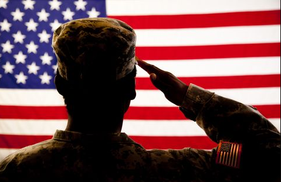

social justice
Teenage years are the riskiest time to develop an alcohol dependence.
Youth who start drinking before the age of 15 are four times more likely to develop
alcoholism later in life. On top of that, an individual’s brain is still developing
well into their twenties. Excessive drinking can alter that development, affecting
cognitive functions, causing learning problems,
restructuring the way synapses are formed, and requiring alcohol to have some
semblance of normal function.
College students easily fall prey to this disorder due to binge drinking being
considered part of "college experience" there is an enourmous number of injuries,
deaths and assaults, resulting from college drinking and 1 in 4 students have
reported having problems with academics due to drinknig
Lastly verterans are extremely vulnerable to this disorder.
After their service ends, it is often difficult for soldiers
to return to civilian life. Up to 25% of former service members
are diagnosed with post-traumatic stress disorder (PTSD) or some
kind of anxiety disorder. As a result many turn to alccohol.
Alcohol use disorder actually worsens ptsd by affecting sleep
and causing strongwer symptoms
